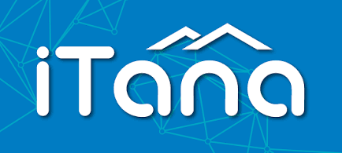

Practicante de Ingeniería de Software (2023)
1 año
-
✓ Desarrollé la arquitectura Full Stack y lideré el desarrollo integral de módulos complejos, conectando de extremo a extremo el frontend en Angular con endpoints de API REST en Java Spring Boot, además de asegurar la consistencia de datos mediante validaciones rigurosas en Postman.
-
✓ Diseñé el producto y la UX/UI prototipando desde cero en Figma el flujo completo y la arquitectura de información de más de 6 módulos para sistemas de inventario y facturación, logrando una transición óptima desde el diseño hasta el código funcional.
-
✓ Integré servicios de facturación electrónica mediante la interconexión con la API de NubeFacT en el backend con Java Spring Boot, habilitando la emisión automática y legal de boletas y facturas electrónicas para un sistema de ventas.
-
✓ Aseguré la entrega constante de software mediante el control de versiones en GitHub, gestionando el flujo de ramas e integrando código de manera continua para minimizar errores en los despliegues de producción.